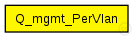
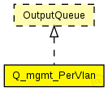

This documentation is released under the Creative Commons license
This documentation is released under the Creative Commons licenseTODO auto-generated module
The following diagram shows usage relationships between types. Unresolved types are missing from the diagram. 
The following diagram shows inheritance relationships for this type. Unresolved types are missing from the diagram. 
| Name | Type | Default value | Description |
|---|---|---|---|
| queueLimit | int | 1000 |
| Name | Value | Description |
|---|---|---|
| display | i=block/fork |
| Name | Direction | Size | Description |
|---|---|---|---|
| in | input | ||
| out | output |
// // TODO auto-generated module // simple Q_mgmt_PerVlan like OutputQueue { parameters: @display("i=block/fork"); int queueLimit = default(1000); gates: input in; output out; }
This documentation is released under the Creative Commons license